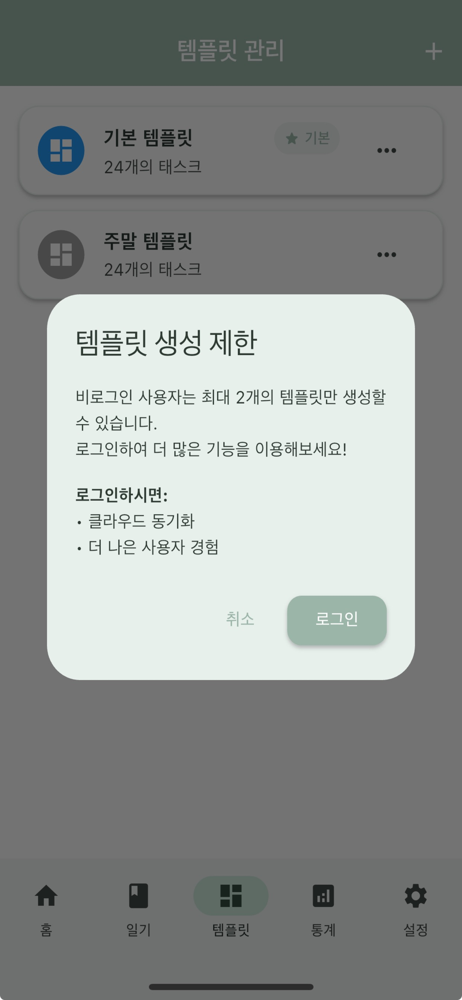
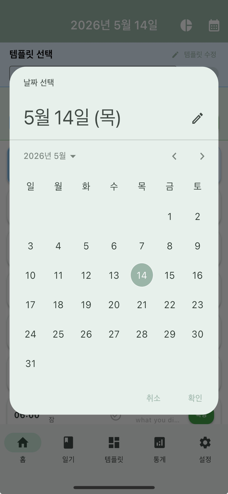
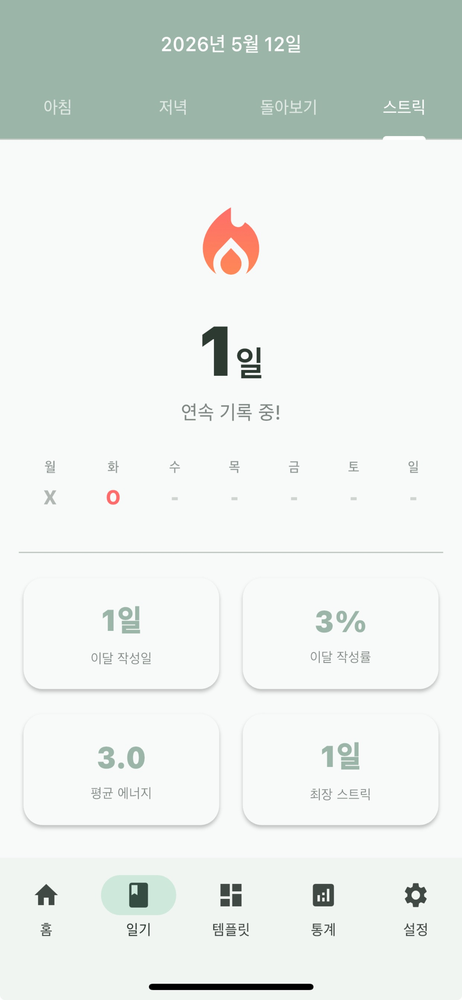
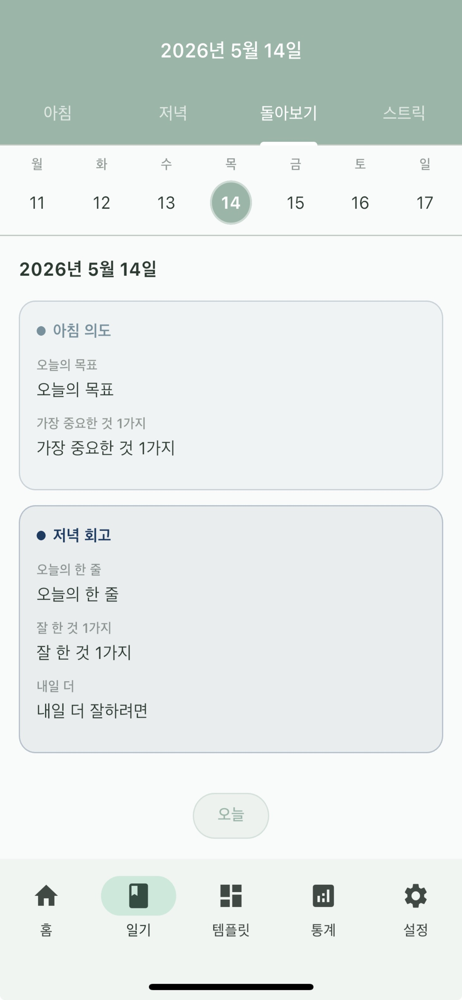

시간 관리, 다시 단순하게
하루를
디자인하다.
계획 링과 실제 링이 겹치는 24시간 시계. 하루를 한눈에 봅니다.

두 개의 링
안쪽은 계획, 바깥은 실제.
한 자리에서 두 가지를 비교합니다. 차이가 보이면, 내일의 템플릿을 다듬으세요.
잠
신체적
지적
사회적
영적
낭비
기타
템플릿
반복되는 하루는
한 번만 짭니다.
기본 템플릿 하나. 주말 템플릿 하나. 매일 처음부터 시작하는 대신, 어제의 리듬에서 출발합니다.

일기
아침에 한 줄,
저녁에 한 줄.
아침에는 오늘의 의도를. 저녁에는 한 줄의 회고를. 길게 쓰지 않아도 됩니다. 한 줄이면 충분합니다.


잠
13h
신체적
4h
지적
4h
사회적
2h
통계
어디에 시간을 썼나,
한눈에.
잠 · 신체적 · 지적 · 사회적 · 영적 · 낭비 · 기타. 일곱 칸이 한 주를 설명합니다. 더 늘리지 않습니다.
학생, 직장인, 시니어까지.
하루는 모두 24시간입니다.
오늘부터 시작하세요.
무료로 받고, 첫 템플릿을 만드는 데 5분이면 충분합니다.